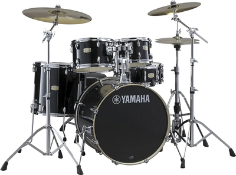
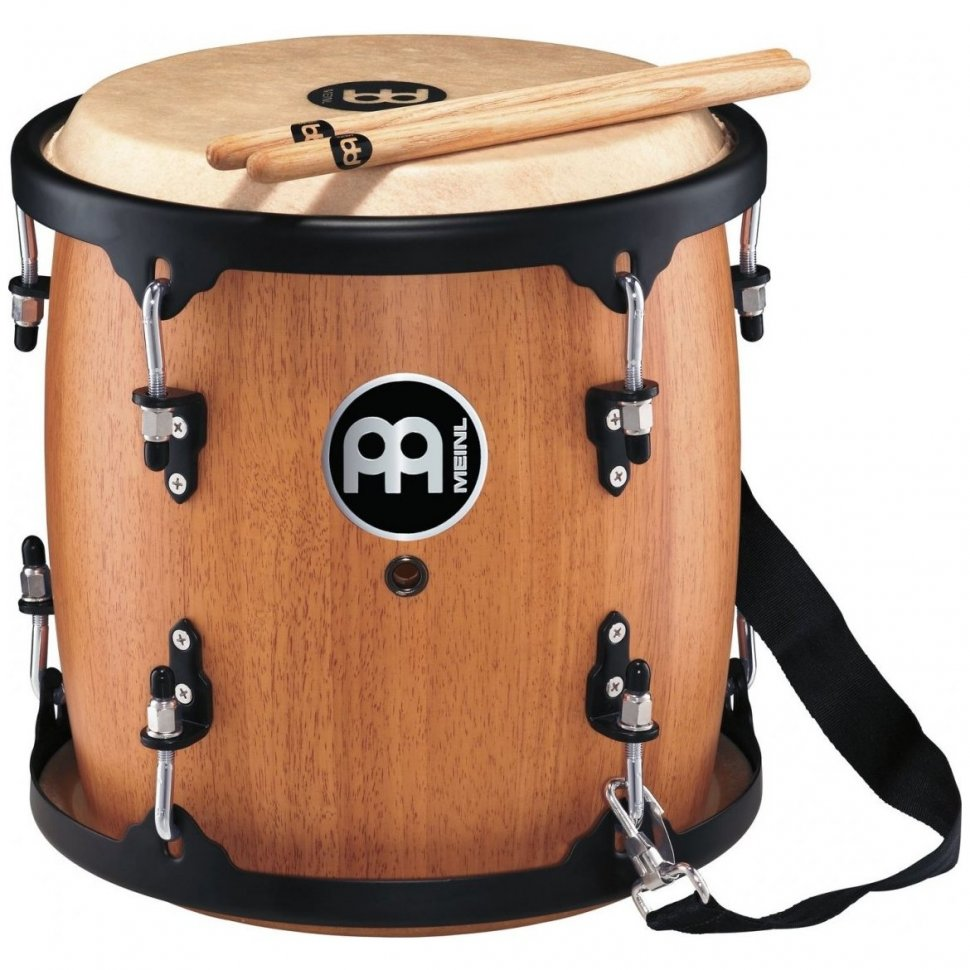
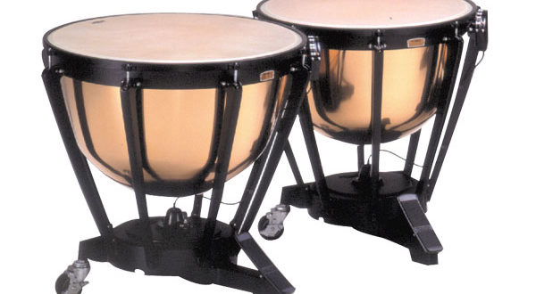
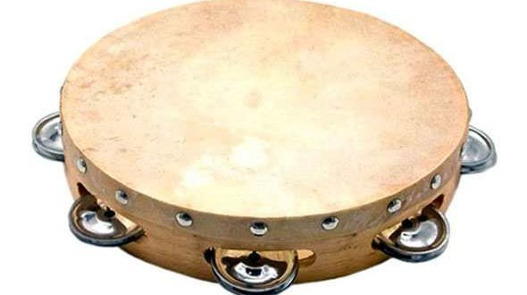

Барабани — основа ритмічного супроводу у багатьох жанрах. Створюють звук через удар по мембрані. Використовуються в рок, джаз, поп-музиці та оркестрах.
Барабани
Перкусія — загальна назва для ударних інструментів, як-от маракаси, тріангл, конґа. Вона збагачує музику ритмічними й тембровими ефектами.

Перкусія
Литаври — оркестрові ударні інструменти з натягнутою мембраною на мідному корпусі. Відзначаються глибоким, потужним звуком і використовуються для драматичного ефекту.

Литаври
Бубни — прості ударні інструменти з дзвіночками або мембраною. Входять до фольклорної музики різних культур і часто використовуються у ритмічному супроводі.
